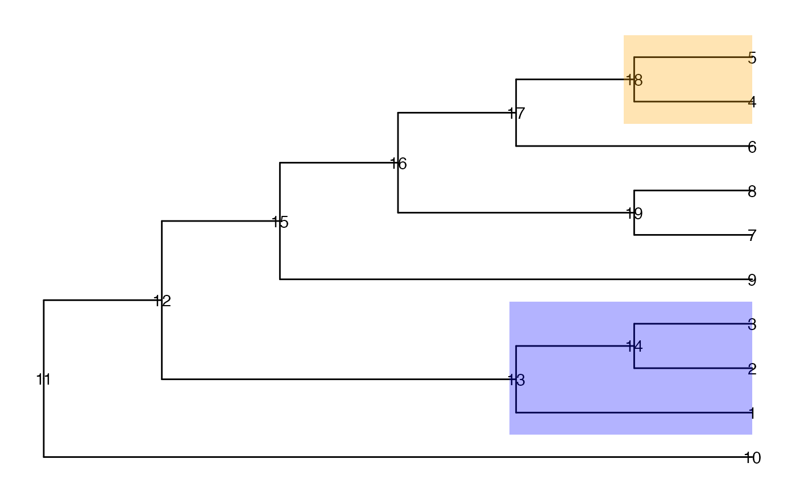

Extract information about candidates.
Arguments
- object
An output object from evalCand.
Examples
suppressPackageStartupMessages({
library(TreeSummarizedExperiment)
library(ggtree)
})
## Simulate some data
data(tinyTree)
ggtree(tinyTree, branch.length = "none") +
geom_text2(aes(label = node)) +
geom_hilight(node = 13, fill = "blue", alpha = 0.3) +
geom_hilight(node = 18, fill = "orange", alpha = 0.3)

set.seed(1)
pv <- runif(19, 0, 1)
pv[c(seq_len(5), 13, 14, 18)] <- runif(8, 0, 0.001)
fc <- sample(c(-1, 1), 19, replace = TRUE)
fc[c(seq_len(3), 13, 14)] <- 1
fc[c(4, 5, 18)] <- -1
df <- data.frame(node = seq_len(19),
pvalue = pv,
logFoldChange = fc)
## Get candidates
ll <- getCand(tree = tinyTree, score_data = df,
node_column = "node",
p_column = "pvalue",
sign_column = "logFoldChange")
## Evaluate candidates
cc <- evalCand(tree = tinyTree, levels = ll$candidate_list,
score_data = df, node_column = "node",
p_column = "pvalue", sign_column = "logFoldChange",
limit_rej = 0.05)
## Get summary info about candidates
out <- infoCand(object = cc)
out
#> t upper_t is_valid method limit_rej level_name best rej_leaf rej_node
#> 1 0.00 0.06666667 TRUE BH 0.05 0 FALSE 5 5
#> 2 0.01 0.15000000 TRUE BH 0.05 0.01 TRUE 5 2
#> 3 0.02 0.15000000 TRUE BH 0.05 0.02 TRUE 5 2
#> 4 0.03 0.15000000 TRUE BH 0.05 0.03 TRUE 5 2
#> 5 0.04 0.15000000 TRUE BH 0.05 0.04 TRUE 5 2
#> 6 0.05 0.15000000 TRUE BH 0.05 0.05 TRUE 5 2
#> 7 0.10 0.15000000 TRUE BH 0.05 0.1 TRUE 5 2
#> 8 0.15 0.15000000 FALSE BH 0.05 0.15 FALSE 5 2
#> 9 0.20 0.15000000 FALSE BH 0.05 0.2 FALSE 5 2
#> 10 0.25 0.15000000 FALSE BH 0.05 0.25 FALSE 5 2
#> 11 0.30 0.15000000 FALSE BH 0.05 0.3 FALSE 5 2
#> 12 0.35 0.15000000 FALSE BH 0.05 0.35 FALSE 5 2
#> 13 0.40 0.15000000 FALSE BH 0.05 0.4 FALSE 5 2
#> 14 0.45 0.15000000 FALSE BH 0.05 0.45 FALSE 5 2
#> 15 0.50 0.15000000 FALSE BH 0.05 0.5 FALSE 5 2
#> 16 0.55 0.15000000 FALSE BH 0.05 0.55 FALSE 5 2
#> 17 0.60 0.15000000 FALSE BH 0.05 0.6 FALSE 5 2
#> 18 0.65 0.15000000 FALSE BH 0.05 0.65 FALSE 5 2
#> 19 0.70 0.15000000 FALSE BH 0.05 0.7 FALSE 5 2
#> 20 0.75 0.15000000 FALSE BH 0.05 0.75 FALSE 5 2
#> 21 0.80 0.15000000 FALSE BH 0.05 0.8 FALSE 5 2
#> 22 0.85 0.15000000 FALSE BH 0.05 0.85 FALSE 5 2
#> 23 0.90 0.15000000 FALSE BH 0.05 0.9 FALSE 5 2
#> 24 0.95 0.15000000 FALSE BH 0.05 0.95 FALSE 5 2
#> 25 1.00 0.15000000 FALSE BH 0.05 1 FALSE 5 2